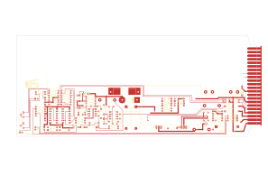
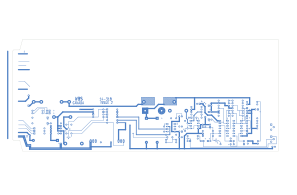

M702D — Intercom Output Amplifier
| Type | module |
| Category | COMMUNICATION |
| Try it | simulator & front panel · download package (zip) |
| Earliest dated evidence | 1996|29 — manual issue date |
| Evidence | "Issue #1 January 17, 1996" in WBSps Engineering from H drive-20261018T013433Z-1-001/WBSps Engineering from H drive/WBSps - M7XX/M703D/WP/M702D.WPD |
| Confidence | high |
| All years found | 1996|29 |
| Used in jobs | 960296 (1996|29) |
| Variants | M702 |
| Folder | Modules/COMMUNICATION/M702D |
Connections
What it is made of and what it is part of.
Pictures


M702D-top.svg

M702D-bottom.svg 1996 - 960296-01-001 - CBC REGINA CENTRAL ELECTRONICS FUNCTIONAL - DRN DRG - ISS 1.jpg
1996 - 960296-01-001 - CBC REGINA CENTRAL ELECTRONICS FUNCTIONAL - DRN DRG - ISS 1.jpg 19xx - DOC - 702-03-003 - REMOVE ALL BURRS AND SHARP EDGES.jpg
19xx - DOC - 702-03-003 - REMOVE ALL BURRS AND SHARP EDGES.jpg 19xx - 702-03-003 - M702D HEATSINK - DRN WS - ISS 1.jpg
19xx - 702-03-003 - M702D HEATSINK - DRN WS - ISS 1.jpg 1996 - 960296 - DOC - 2021-3-16-23-22-21.jpg
1996 - 960296 - DOC - 2021-3-16-23-22-21.jpgDates found in the documents
| Year | Kind | Text | File |
|---|---|---|---|
| 1996|29 | manual issue date | Issue #1 January 17, 1996 |
1996 - M702D - file.wpd |
Documents (1)
| Year | File | |
|---|---|---|
| 1996|29 | 1996 - M702D - file.wpd | note |
Drawings & design files (1)
| Year | File | |
|---|---|---|
| 1996|29 | 1996 - M702D - file.pcb | note |
Circuit boards (1)
| File | Board | Open |
|---|---|---|
| 1996 - M702D - file.pcb | M702D | interactive viewer · KiCad board · top render · bottom render |
Consoles & jobs it is connected to (1)
Their own drawings name this module.
| Job | Year | Drawing | Page |
|---|---|---|---|
| 960296 | 1996|29 | 1996 - 960296-01-001 - CBC REGINA CENTRAL ELECTRONICS FUNCTIONAL - DRN DRG - ISS 1.jpg | 1 |
Named in other drawings & documents (10)


From the manuals
Each manual split into its sections. Text that is the same in many Ward-Beck manuals (warranty, address, standard notes) is kept once on the Boilerplate page and linked.
Specifications (1)
Technical Data — 208 words · 1996 - M702D - file.wpd, page 1
M702D INTERCOM OUTPUT AMPLIFIER
Gain (Bridging)
To Speaker Output: +27 dB to +7 dB, ±1 dB. To Line Output: +15 dB to -5 dB, ±1 dB.
Frequency Response: ±1 dB from 100 Hz to 5 kHz.
Noise: Better than 80 dB below 1.5 watts or +18 dBm (gain set to unity for line output or +17 dBm for speaker output), 20 Hz to 20 kHz bandwidth.
Harmonic Distortion: Less than 1% from 100 Hz to 5 kHz at +18 dBm output (balanced, or 1.5 watts)
Input Level: +8 dBm nominal, +19 dBm maximum.
Input Impedance: 10K ohms balanced and centre tapped.
Source Impedance: 600 ohms or less, balanced.
Output Levels:
Line: +8 dBm nominal, +22 dBm maximum. Speaker: 300 mW nominal, 3 watts peak power.
Output Impedence:
Line: Less than 30 ohms, balanced. Speaker: Less than 1 ohm, unbalanced.
Load Impedence:
Line: 600 ohms or greater, balanced. Speaker: 8 ohms, nominal.
Muting:
Full: 100 dB down. Part: 6 dB to 24 dB down. Override: Full output.
Power Requirements: +32 volts DC unregulated. 45 mA idle, 350 mA maximum at 1.5 watts.
Ambient Temperature: 0 to 40 degrees Celsius.
Dimensions: 0.7" wide x 4.4" high x 11.0 deep. ( 18 mm x 112 mm x 280 mm ).
1-1
- source: 1996 - M702D - file.wpd, p. 1
Circuit description (1)
Circuit Description — 1254 words · 1996 - M702D - file.wpd, page 1
M702D INTERCOM OUTPUT AMPLIFIER
The M702D Output Amplifier is designed to receive a +8 dBm nominal input signal and amplify it to a power level sufficient to operate a loud speaker to a maximum of 3 watts.
Input The input is applied to pins U and V of the module connector and is coupled by C201 and C202 to two separate resistive networks followed by two solid state switches. The switches provide two individual signal paths between the module input and the buffer and output amplifiers U203 and U204. The lower path is used to produce full output, while the upper path will produce a partially muted output. The control logic determines the choice of the signal path used for any given operational conditions.
Mute Control Logic Pins 18, 19 and 20 of the module connector serve as the control inputs to the logic gates U202A through D.
Under normal conditions, with no ground applied to any of the three control inputs, the B and D sections of U201 are switched on and the A and C sections are off. As a result, the amplifier is operating at full output (no muting applied).
If the mute input (pin 19) is grounded, sections B and D of U201 are off, blocking the main signal path. At the same time, sections A and C of U201 are on, opening the part mute path. The amount of muting is determined by R217, and is adjustable over a 20 dB range.
When pin 20 is grounded, it will override both full mute and part mute functions as described above. The results in full output via the B and D sections of U201.
Output The audio signal from the output of the solid state switches within U201 is coupled through C207 and C208 to U203 and the power output stage built around U204.
Integrated circuit U204, along with Q203, Q204, Q205 and Q206 plus associated components are configured as a 3 watt power booster stage for driving an 8 ohm speaker load. Its output appears at module connector pins 21 and Y.
An actively balanced +8 dBm, 600 ohm output is derived between U203B and U204. This is available at the module connector pins W and X. This output is capable of driving a single 600 ohm load.
R250 controls the amount of negative feedback applied to U203B. This serves as a gain trim control, allowing ±10 dB adjustment range from the nominal system level of +8 dBm, or 300 mW respectively.
Power Supply Decoupling The module is powered by a +32 volt DC unregulated power source, connected to pins 13 and P of the module connector. After passing through an isolation diode (CR205), and a fuse (F201), the supply voltage is decoupled by R235, C212 and C213. DS201 serves as a visual power indicator.
Q202 provides further filtering and reduces the supply voltage to 12 volts to operate U201 and U202.
Under idle conditions, the M702D draws approximately 45 mA, rising to 350 mA at 3 watt output. With the output shorted, the current will rise to approximately 750 mA.
A short circuit condition at the amplifier output will not normally blow fuse F201, as long as the amplifier is operating with normal program material. However, sustained full output into a short circuit failure will cause the fuse to open.
2-1
C201 Capacitor 1 uF/35 V ITT 1M35 C202 " 1 uF/35 V " " C203 " 0.1 uF/35 V " 0.1M35 C204 " 0.1 uF/35 V " " C205 " 0.1 uF/35 V " "
C206 " 0.1 uF/35 V " " C207 " 22 uF/25 V Philips 03016229 C208 " 22 uF/25 V " " C209 " 22 uF/25 V " " C210 " 47 pF " 638-34479
C211 " 22 uF/25 V " 03016229 C212 " 220 uF/40 V " 03217221 C213 " 220 uF/40 V " " C214 " 0.1 uF/50 V Aselco CQ92-MC-100-153M C215 " 10 uF/25 V ITT 10M25
C216 " 22 uF/25 V Philips 03016229 C217 " 47 pF " 638-34479 C218 " 100 pF " 638-58101 C219 " 22 uF/25 V " 03016229 C220 " 100 uF/25 V " 03116101
C221 " 100 uF/25 V " " C222 " 680 uF/16 V " 03215681 C223 " 10 uF/25 V ITT 10M25 C224 " 10 uF/25 V " " C225 " 0.068 pF Aselco CQ92-MC-100-802M
C226 " 22 uF/25 V Philips 03016229 C227 " 0.1 uF/50 V Aselco CQ92-MC-100-153M C228 " 100 pF " 638-58101 C229 " 100 pF " " C230 " SOT
C231 " 47 pF " 638-34479 C232 " 22 uF/25 V Philips 03016229
CR201 Diode Motorola 1N4148 CR202 " " " CR203 " " " CR204 " " " CR205 " " 1N4003
CR206 " " 1N4148 CR207 " " 1N5364A CR208 " " 1N4148
3-1 CR209 Diode Motorola 1N4148
CR210 " " " CR211 " " " CR212 " " "
DS201 LED, Yellow Dialight 555-2401
F201 Fuse Amp AGC.500
Q201 Transistor National PN3569 Q202 " " " Q203 " " 2N3904 Q204 " " 2N3906 Q205 " " TIP30
Q206 " " TIP29
R201 Resistor 1/4W 5% 15K Philips CR25 R202 " " 15K " " R203 " " 100K " " R204 " " 100K " " R205 " " 100K " "
R206 " " 150K " " R207 " " 150K " " R208 " " 150K " " R209 " " 1M " " R210 " " 1M " "
R211 " " 1M " " R212 " " 15K " " R213 " " 15K " " R214 " " 20K " " R215 " " 20K " "
R216 " " 1K " " R217 Potentiometer 20K Piher PT10H 20K R218 Resistor 1/4W 5% 1K Philips CR25 R219 " " 1K " " R220 " " 10K " "
R221 " " 10K " " R222 " " 1K " " R223 " " 1K " " R224 " " 100K " " R225 " " 47K " "
3-2 R226 Resistor 1/4W 5% 100K P
- source: 1996 - M702D - file.wpd, p. 1
Contents (JSON)
{
"device": "M702D",
"name": "Intercom Output Amplifier",
"category": "COMMUNICATION",
"year": 1996,
"part_of": [
"960296"
],
"documents": [
{
"file": "Modules/COMMUNICATION/M702D/1996 - M702D - file.pcb",
"year": 1996,
"pages": 1,
"holds": []
},
{
"file": "Modules/COMMUNICATION/M702D/1996 - M702D - file.wpd",
"year": 1996,
"pages": 1,
"holds": [
"dates",
"sections"
]
}
]
}